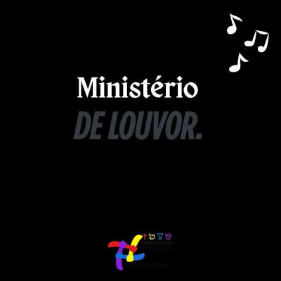
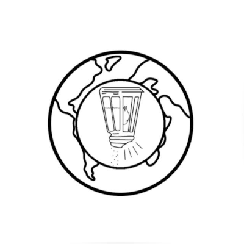

Nossos Ministérios
Ministério de Louvor
Responsável por conduzir a igreja na adoração, preparando o ambiente espiritual através da música e cânticos.
Ministério Infantil
Cuida das crianças na igreja, ensinando a Palavra de Deus de forma lúdica, divertida e acessível para a idade delas.
Ministério de Mídia
Responsável pela transmissão, som, projeção e divulgação dos cultos nas redes sociais, ajudando a levar a mensagem além das 4 paredes.

Ministério das Mulheres
Focado em acolher, fortalecer e incentivar as mulheres na caminhada cristã. Tem encontros =, orações, palestras e projetos que tratam de temas específicos da vida feminina, ajudando na fé, na família e no serviço da igreja.

Ministério dos Homens
Apoia os homens na vida espiritual, familiar e profissional. Promove encontros discipulados, estudos e ações sociais, sempre incentivando os homens a serem líderes firmes na fé e exemplos em suas casas.
Ministério dos Jovens
Grupo voltado para fortalecer a fé dos jovens, promovendo comunhão, apoio espiritual e desenvolvimento de talentos. Realizam cultos, eventos, retiros e ações sociais, sempre buscando envolver os jovens na obra e no crescimento com Deus.
Diaconato
Auxilia na organização do culto, recepção, assitência aos membros, distribuição da Santa Ceia e apoio nas necessidades práticas da igreja.